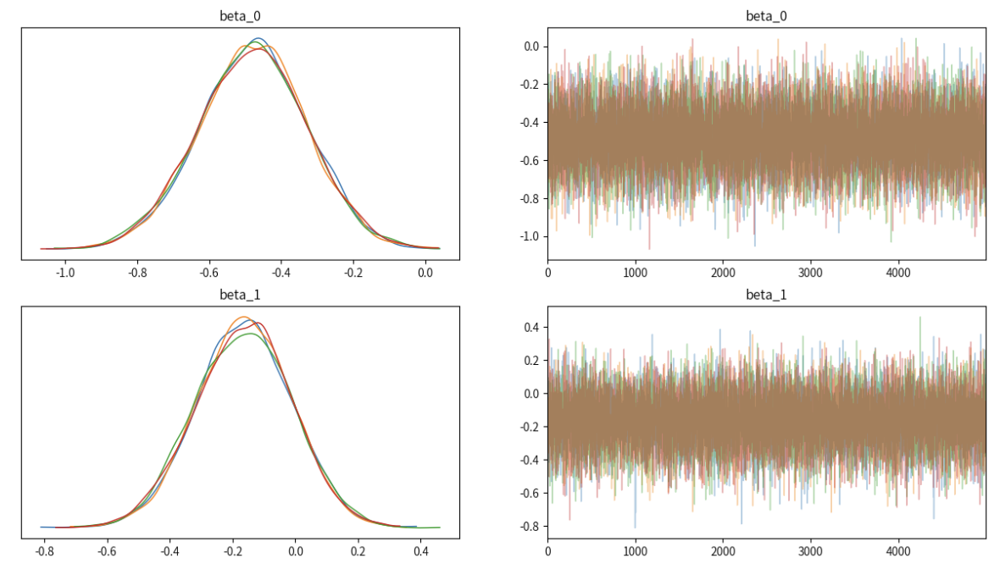
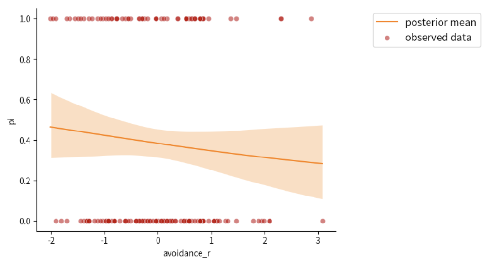
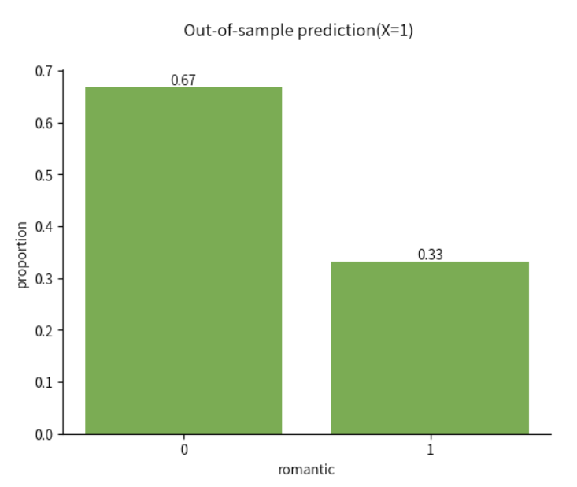

练习#
我们以一个新的例子进行练习对logistic模型的使用。
我们关注的研究问题：个体依恋风格中的回避倾向如何影响个体的恋爱情况？
成人依恋量表是一种常用于评估个体依恋风格的工具，包括亲密关系中的情感需求和行为模式。其中的回避分数反映了个体在恋爱关系中表现出的回避特征。这些特征通常表现为对亲密关系的回避、不愿意与伴侣建立过多的情感联系、保持独立性和独立思考的倾向。
研究假设：具有高回避分数的个体可能更倾向于避免或抵制与伴侣建立深入的情感联系，更难以建立恋爱关系
在此示例研究中，我们使用成人依恋量表中的分量表测得回避分数，并使用标准化后的回避分数进行后续分析。
数据来源: Hu, C.-P. et al. (2018). Raw data from the Human Penguin Project. Open Science Framework. https://doi.org/10.17605/OSF.IO/H52D3 回避分数量表来源：Fraley, R. C., Waller, N. G. & Brennan, K. A. An item response theory analysis of self-report measures of adult attachment. J. Pers. Soc. Psychol. 78, 350–365 (2000).
我们对以下关键步骤进行练习:
模型定义
绘制后验预测回归线
对新数据进行预测
后验预测评估
可视化#
首先，我们对数据进行初步的可视化：
# 导入 pymc 模型包，和 arviz 等分析工具
import pymc as pm
import arviz as az
import seaborn as sns
import scipy.stats as st
import numpy as np
import matplotlib.pyplot as plt
import xarray as xr
import pandas as pd
import ipywidgets
# 忽略不必要的警告
import warnings
# 通过 pd.read_csv 加载数据 Data_Sum_HPP_Multi_Site_Share.csv
try:
df_raw = pd.read_csv('/home/mw/input/bayes3797/Data_Sum_HPP_Multi_Site_Share.csv')
except:
df_raw = pd.read_csv('data/Data_Sum_HPP_Multi_Site_Share.csv')
# 选取清华站点的数据
df = df_raw[df_raw["Site"] == "Tsinghua"]
# 选取本节课涉及的变量
df = df[["romantic", "avoidance_r", "sex"]]
#重新编码，编码后的数据：1 = "yes"; 2 = "no"
df["romantic"] = np.where(df['romantic'] == 2, 0, 1)
#设置索引
df["index"] = range(len(df))
df = df.set_index("index")
warnings.filterwarnings("ignore")
# 对数据进行可视化
# 绘制散点图
sns.scatterplot(data=df,
x="avoidance_r",
y="romantic",
alpha=0.6)
# 设置x轴标题
plt.xlabel("avoidance")
# 设置y轴刻度
plt.yticks([0,1],['no','yes'])
sns.despine()
模型定义#
#===========================
# 提示：参照之前的代码，对...中的内容进行修改
#===========================
with pm.Model() as log_model2:
# 添加数据，方便后续绘图
x = pm.MutableData("avoidance_r", df['avoidance_r'])
y = pm.MutableData("romantic", df['romantic'])
# 设置先验
# 通常我们会为截距和系数设置正态分布的先验
intercept = pm.Normal('...', mu=..., sigma=...)
coefficient = pm.Normal('...', mu=..., sigma=...)
# 线性预测
linear_predictor = ...
# 似然函数
# 使用逻辑函数将线性预测转换为概率
# 方法一：自行进行 logit link 转换
pi = pm.Deterministic('...', pm.math.invlogit(...))
likelihood = pm.Bernoulli('...', p=..., observed=...)
# 方法二：直接使用 logit_p 进行转换
# likelihood = pm.Bernoulli('likelihood', logit_p=linear_predictor, observed=y)
MCMC采样#
#===========================
# 注意！！！以下代码可能需要运行1-2分钟左右
#===========================
with log_model2:
# MCMC 近似后验分布
log_model2_trace = pm.sample(
draws=5000, # 使用mcmc方法进行采样，draws为采样次数
tune=1000, # tune为调整采样策略的次数，可以决定这些结果是否要被保留
chains=4, # 链数
discard_tuned_samples= True, # tune的结果将在采样结束后被丢弃
random_seed=84735)
log_model2_trace
az.plot_trace(...,
var_names=["...","..."],
figsize=(15,8),
compact=False)
plt.show()

绘制后验预测回归线#
##---------------------------------------------------------------------------
# 无需修改，直接运行即可
#---------------------------------------------------------------------------
#画出每个自变量对应的恋爱概率94%hdi值
az.plot_hdi(
df.avoidance_r,
log_model2_trace.posterior.pi,
hdi_prob=0.95,
fill_kwargs={"alpha": 0.25, "linewidth": 0},
color="C1"
)
#得到每个自变量对应的恋爱概率均值，并使用sns.lineplot连成一条光滑的曲线
post_mean = log_model2_trace.posterior.pi.mean(("chain", "draw"))
sns.lineplot(x = df.avoidance_r,
y= post_mean,
label="posterior mean",
color="C1")
#绘制真实数据散点图
sns.scatterplot(x = df.avoidance_r,
y= df.romantic,label="observed data",
color='#C00000',
alpha=0.5)
#设置图例位置
plt.legend(loc="upper right",
bbox_to_anchor=(1.5, 1),
fontsize=12)
sns.despine()

对新数据进行预测&分类#
除了对当前数据结果做出解释，我们也可以使用当前的参数预测值，对新数据做出预测
比如，当回避分数位于一个标准差时，即\(X_{i1}=1\)时，个体是处在恋爱情况还是单身情况呢？
我们使用pm.set_data传入新的数据，使用
pm.sample_posterior_predictive对新数据生成后验预测值假设我们传入的数据是(X=1, Y=0)
#===========================
# 提示：参照之前的代码，对...中的内容进行修改
#===========================
odds = ...
pi = ...
Y_hat = ...
# 统计其中0和1的个数，并除以总数，得到0和1对应的比例值
y_pred_freq = np.bincount(Y_hat)/len(Y_hat)
#绘制柱状图
bars = plt.bar([0, 1], y_pred_freq, color="#70AD47")
#用于在柱状图上标明比例值
for bar, freq in zip(bars, y_pred_freq):
plt.text(bar.get_x() + bar.get_width() / 2, bar.get_height(), f"{freq:.2f}", ha='center', va='bottom')
#对刻度、标题、坐标轴标题进行设置
plt.xticks([0, 1])
plt.suptitle("Out-of-sample prediction(X=1)")
plt.xlabel("romantic")
plt.ylabel("proportion")
sns.despine()

后验预测估计#
##---------------------------------------------------------------------------
# 提示：参照之前的代码与先验定义，对...中的内容进行修改
#---------------------------------------------------------------------------
# 定义计算指标函数
def calculate_metrics(TP, FP, TN, FN):
# 计算准确性
accuracy = (TP + TN) / (TP + TN + FP + FN)
# 计算敏感性
sensitivity = TP / (TP + FN) if (TP + FN) != 0 else 0
# 计算特异性
specificity = TN / (TN + FP) if (TN + FP) != 0 else 0
return accuracy, sensitivity, specificity
# 计算指标
accuracy, sensitivity, specificity = calculate_metrics(...)
# 打印结果
print(f"True Positive: {true_positive}")
print(f"False Positive: {false_positive}")
print(f"True Negative: {true_negative}")
print(f"False Negative: {false_negative}")
print(f"准确性: {accuracy}")
print(f"敏感性: {sensitivity}")
print(f"特异性: {specificity}")
output:
True Positive: 30 False Positive: 72 True Negative: 30 False Negative: 69 准确性: 0.29850746268656714 敏感性: 0.30303030303030304 特异性: 0.29411764705882354